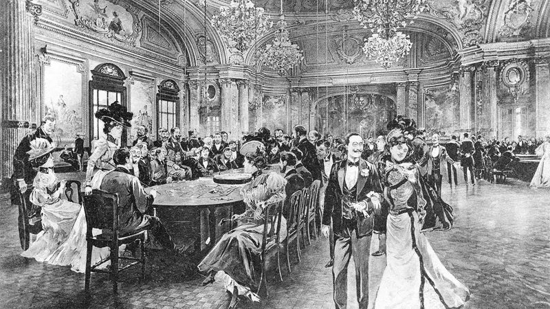

All issues

The law of large numbers
Why averages tell the truth, from coin flips and roulette to mini-batch SGD, and where they stop telling it.
Read and play →The central limit theorem
Why 1,000 voters can speak for a whole country, why every average piles up into the same hill, and how to build a margin of error yourself.
Read and play →A frog that remembers
What happens to randomness when each step remembers the last one?